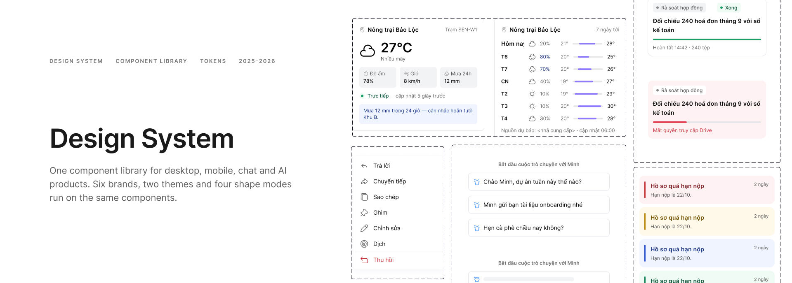
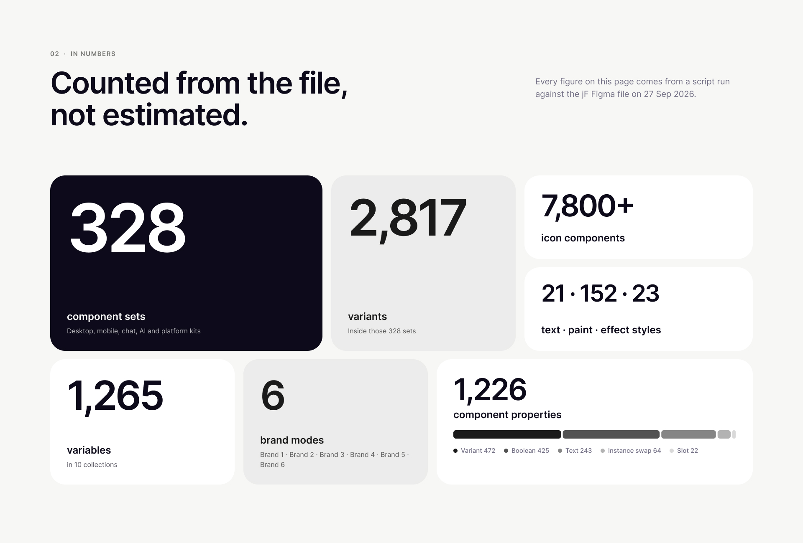
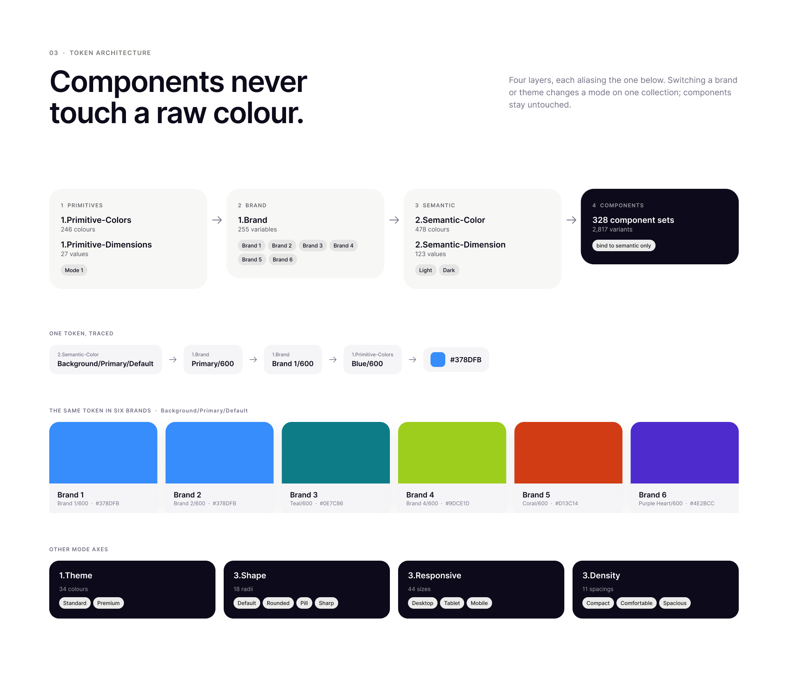
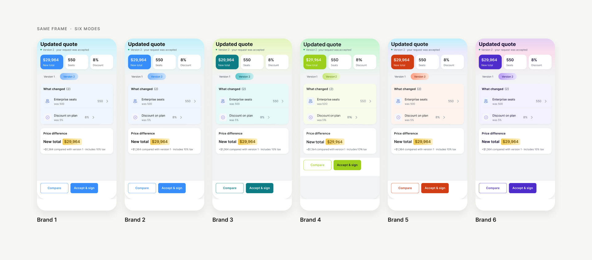
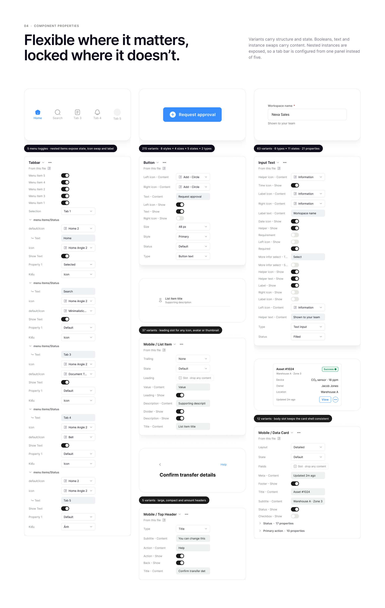
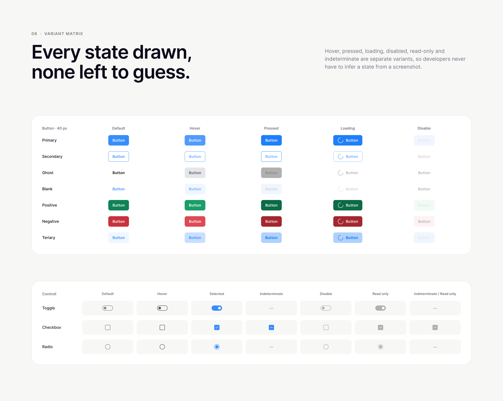
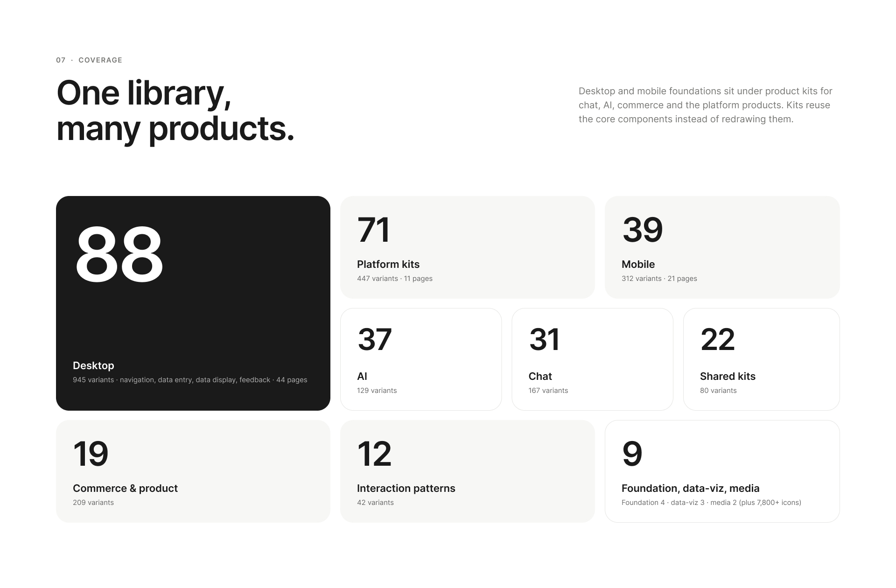

Design System
One library, six products, five brands — from a button to an AI legal answer.
The problem
Six products were being designed in parallel — an internal platform, a chat app, an IoT/GIS dashboard, a farm-operations app, a consumer brand and an AI legal assistant. Each started drifting into its own buttons, tables and alert styles, so every new screen meant re-deciding things that were already decided elsewhere.
The goal: one Figma library where a product changes brand, shape and density by switching a mode — not by detaching components.
By the numbers
116pages
328component sets
2,817variants
1,265variables in 10 collections
7,800+icons
196text, colour & effect styles
Token architecture
Three layers. Components only ever bind to the semantic layer, so brand, theme and layout changes never reach inside a component.
| Collection | Modes | Vars |
|---|---|---|
| Primitive colours / dimensions | 1 | 210 / 27 |
| Brand | jFoundation, jChat, jMaps, jFa, Pastel | 255 |
| Theme | Standard, Premium | 34 |
| Semantic colour | Light, Dark | 478 |
| Semantic dimension | 1 | 123 |
| Shape | Default, Rounded, Pill, Sharp | 18 |
| Responsive | Desktop, Tablet, Mobile | 44 |
| Density | Compact, Comfortable, Spacious | 11 |
| System | 1 | 29 |
What’s in the library
- Desktop — 37 pages, 87 component sets, 910 variants: navigation, data entry, data display, feedback.
- Mobile — 20 pages, 39 sets, 311 variants: pickers, bottom sheets, action bars, keypads. The difference lives in the overlay layer: status bar, keyboard, safe area.
- Chat & AI — 11 pages, 68 sets, 296 variants: message parts, composer, heavy AI tasks, in-chat commerce (product recommendations, cart drafts, quotations, contract review).
- Platform — data tables, charts, GIS & map, operations, alerts & logs — shared by jMaps and jFa, split only by brand mode.
- AI · Legal — citation cards (8 validity states), validity timeline, clause compare, 4-level risk flags, 5-state expert review.
Handoff
- Every component set carries a description: when to use it, when not to.
- Every component group has its own doc page with anatomy, variants and usage rules.
- Contrast is checked by script against WCAG for every mode, not by eye.
- A decision log records why each non-obvious choice was made.
Deliverables
Figma library
Variables & modes
Desktop & mobile kits
Chat & AI kits
Documentation







